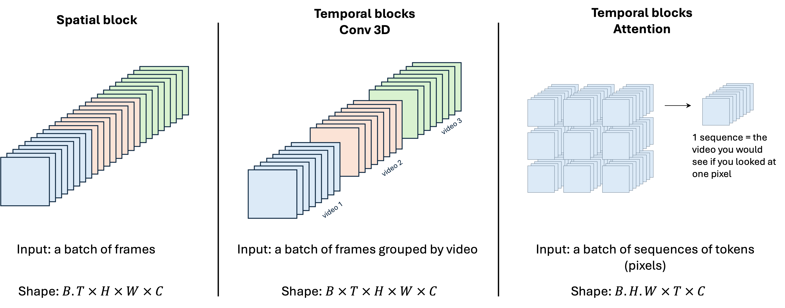

Overfit#3: How does Video generation work? - Insights into Stable Video Diffusion
Motivation
Guys, generating videos is incredibly challenging ... I mean, truly, immensely challenging.
For the past two years, we've been treated to a constant stream of cutting-edge text-to-image models on Hugging Face: DALLE, Stable Diffusion, SDXL, SDXL Turbo... The text-to-image community is positively buzzing, much to our delight.
Meanwhile, on Hugging Face, the video generation space is eerily quiet. Too quiet. The reason? If generating images was complex, generating videos is hell on earth.
In theory, generating a video isn't much harder than generating a set of images, is it?
Well, in practice, yes. A video comprises a sequence of images, displayed at 30 frames per second. But, you also have to address some really tricky challenges:
How to enforce a high consistency between frames? Text-to-image models lack temporal understanding, so generating frames that logically follow one another is crucial.
How to reduce the insane computational cost? Producing just one second of video equates to generating 30 frames. For a minute-long video, that's a staggering 900 frames... I hope your credit card is within reach. Your bank adviser won't appreciate what is gonna happen.
What dataset to use? Unlike text or images, there are far fewer high-quality open datasets.
"Will Smith eating spaghettis". SOTA a few months ago. See how hard it is to make realistic coherent videos.
What does research suggest about these challenges?
Unfortunately, as of early 2024, many video-generation models remain proprietary, such as Pika, Gen2, and SORA. Consequently, insights into the training techniques of top companies are limited. Fortunately, the Stability AI team continues to share their techniques through open-sourcing their innovations. In this discussion, we will delve into the fundamental technologies that underpin video generation, with a focus on Stable Video Diffusion (SVD), which stands out as one of the leading open-source models in this field in early 2024.
Stable Video Diffusion generate realistic videos. But their duration is still limited to just a few seconds.
Latent Video Diffusion Models
To train an video generation model, most approaches converged to a three-step training process:
Text-to-image pretraining: Pretrain a text-to-image model (Stable Diffusion 2.1 for ex.) to generate images. This step is optional, but research indicates that it yields significantly improved results. This is logical, as leveraging the knowledge from the image dataset enhances performance.
Text-to-video pretraining: Add intermediate temporal layers in the pretrained text-to-image model, and train it as before but on a large video dataset, to align images in a temporally consistent manner.
Text-to-video finetuning: Same as (2) but use a higher resolution dataset, to finetune the super resolution modules.
For your information ...
I already covered step 1 in two posts about how to train a text-to-image model: #1-DDPM and #2-SDXL. In the following sections, I will focus on steps 2 and 3: how to turn a text-to-image pretrained model into an image-to-video model.
Temporal layers
An LDM - Latent Diffusion Model - is able to synthetize high-quality, realistic, independent, images. Yet, it is unable to enforce strong consistency between frames.
For instance, an LDM can generate a batch of 32 "An astronaut riding a horse" images, but, as each image is generated independently from the other, they won't be consistent.
That is because LDM are spatial models. They have no temporal understanding. They can place pixels next to each other in the \(XYZ\) dimensions, but not in the time \(T\) dimension. Their layers are thus called spatial layers.
The key idea to turn LDMs into Video Generators is therefore to add temporal layers, to enforce consistency between the frames. We call this step temporal alignment, hence the name of the article "Align your Latents" (2023).
There are plenty of ways to insert the temporal layers, with a common solution being to interleave temporal blocks between spatial blocks.
Temporal blocks are interleaved between the pretrained spatial blocks. Image based on the Stable Diffusion architecture.
OK. So we have two sets of blocks, temporal blocks and spatial blocks. What sets them apart?
A simple way to depict the distinct traits of each block is by plotting their context windows in the space-time domain, which are directly correlated to their role. In the diagram below, each row represents an individual frame. Spatial operations are illustrated horizontally, while columns illustrate how pixel values evolve over time. Consequently, a vertical attention operation signifies a purely temporal mechanism, effectively aligning the latents across time. The temporal Conv3D block is an in-between block, both spatial and temporal, but more local, as indicated by its presence its short range context window in both dimensions.
Modified from J. Bengochea [1], from original paper [2]
These blocks are not the only choices, as one could use full-context blocks that attend to all pixels across all frames (full spatio-temporal attention) or solely to past frames (causal spatio-temporal attention). However, their computational expense is inherently much higher.
| Block | Role | This layer ensures | Input |
| -------------- | ------- | ------------------------------ | - |
| **Spatial** | Attends to only one image at a time: these are the blocks from the pretrained LDM (step 1) | Spatial consistency | A batch of 3D independent frames |
| **Temporal Conv3D** | Aligns pixels with their closest neighbors in the space-time space | Short-term space-time coherence | A batch of 4D videos, i.e. a batch of frames grouped by video |
| **Temporal Attention** | Aligns a single pixel with itself through time | Long-term temporal coherence | The sequence of values of the pixel during the whole video, i.e. a sequence of $T$ tokens, each token is a 1D-vector of the channels at a given frame |
In "Align your Latents" (2023), the authors use the three types of blocks, to "spread consistency" across spatial and temporal dimensions.
From "Align your latents"
Main takeaway
To my opinion, all you need to remember is that Conv3D temporal blocks enforce local space-time coherence, while attention-based temporal blocks ensure long-term temporal consistency.
Questions you may ask
Should I train the whole network or only the temporal layers?"
No consensus on that. Align your Latents freezes the spatial layers and train the temporal layers on video data only. Stable Video Diffusion trains both spatial and temporal layers.
Should I train the encoder/decoder parts of the Latent Diffusion Model?
Yes, but only the decoder. In Align your Latents, the authors stress out that adding temporal layers to the decoder is key. Indeed, "the autoencoder of the LDM is trained on images only, causing flickering artifacts when encoding and decoding a temporally coherent sequence of images." It makes sense as even if the latent representations of all frames are close in the embedding space, the decoder may decode them slightly differently, causing artifacts.
I notice there are many reshape operations. Why is the batch reshaped so many times?
Each sub-block expects a different input. Either independent frames, or videos, or pixel values sequences. Hopefully, as all training videos have the same number of frames \(T\) and the same frame dimensions (\(H \times W \times C\)), switching from a format to another is a simple np.reshape (or equivalent) operation.

Each layer type expects a specific format. The channel dimension is not represented.
Mask conditioning
Temporal layers allow us to transform our pretrained text-to-image model into an image-to-video model capable of producing short videos, made of a few frames. However, "Align your Latents" (2023) has demonstrated that this approach faces limitations when attempting to generate longer videos with a greater number of frames.
One method to overcome this limitation is to train the model to generate frames conditioned on the preceding frames of the sequence. This approach involves generating an initial short video and then generating subsequent videos using the last frames of the preceding video sequence. This iterative process can be repeated to extend the length of the generated video content.
In "Align your Latents" (2023), the authors employ a conditioning technique that provides the network with a sequence of frames, where the majority are masked, except for 0, 1, or 2 frames. This approach draws inspiration from the paper "Masked Autoencoders Are Scalable Vision Learners" (2021) by Facebook, which enhances autoencoders through the use of masking techniques.
\(\Rightarrow\) Using this technique, the model is both a denoising model (it converts noise into frames) and a prediction model (it predicts the missing frames, based on the not noised ones).
The temporal block is conditioned with 0, 1 or 2 context frames.
The fundamental concept behind "Masked Autoencoders Are Scalable Vision Learners" is to train the autoencoder to reconstruct an image it has only partially observed.
Temporal Interpolation
Okay, we have a model capable of generating dozens of frames, which is a significant advancement. However, this may still not suffice, especially for achieving high frame rates. So, what's the simplest way to create a credible data point from two existing data points? The answer: interpolation.
A common strategy adopted by image-to-video models is to first generate some key frames. Using the mask conditioning method discussed earlier, the model is fed with two frames as conditioning, and then tasked with inferring three intermediate frames. Through this approach, we enhance the frame rate by a factor of 4.
This process can be iterated. For example, in "Align your Latents", the authors employ a double interpolation technique, resulting in a \(\times 16\) increase in frame rate, all within a single network.
Additional notes: To complete the process, the decoder then translates all latent frames back into the pixel space, after which they undergo upsampling through a Super Resolution (SR) model. This cascaded approach significantly diminishes the computational burden of models while preserving their high-resolution capabilities.
Putting everything together
You now deeply understand the inference process of SVD 🔥
(1) First a few frames are generated in the latent space.
(2) and (3) The model then interpolates twice to increase the frame rate.
(4) Finally the decoder decodes the latents into pixel frames.
(5) An additional upsampling model is applied to polish the results.
Indeed, A. Blattmann & al. showed that not all videos are suitable candidates for training. Too short, frequent cut edits, fading in and out, text ... Most videos you could scrap on the web are unsuitable. Additionally, many videos are just static scenes, making them poor candidates to learn motion. Yet, the authors demonstrated how an extensive curation strategy can enhance model performance.
Videos generated by Stable Video Diffusion.
To build their dataset, SVD's authors began with WebVid-10M, a standard video dataset. Through preprocessing techniques and automatic video annotation (using LLMs), they expanded this dataset to an impressive ~500M videos, equivalent to a staggering 212 years' worth of content.
Then, they rigorously filtered this huge dataset. Their filtering process involved several key steps, including:
Reducing the number of cuts per video by segmenting the videos into smaller sub-videos.
Identifying and removing static videos — an easily recognizable characteristic indicated by low optical flow (the mean pixel difference between frames).
Eliminating videos with excessive textual content using optical character recognition (OCR) techniques.
\(\rightarrow\) The extent of the filtering process varied depending on the level of selectivity applied. Consequently, their final datasets ranged from containing 152M to 2.3M videos, 300 frames/video on average i.e ~10sec/video.
Let's keep in mind: garbage in, garbage out.
What is next?
The video generation ecosystem is still in its infancy. However, there is no doubt that all major players in the field (including tech giants and research labs) are actively working to crack the case. After LLMs and image generators, the next step is video generation. For me, there are still two main challenges that prevent us from achieving truly high-performing models:
Better Datasets: Improving curation techniques is crucial for refining and expanding video datasets. While there are numerous open-source image datasets available, there is also a growing need for more open video datasets. Expectations are high for the community to release more comprehensive and diverse video datasets in the coming months.
Enhanced Spatial-Temporal Architectures: Ensuring temporal consistency remains a significant challenge. While the architectures developed thus far represent a promising initial response, they are far from perfect. Full-transformer architectures might hold the key to overcoming this challenge (SORA 👀) ... Only time will reveal if this approach will emerge as the definitive solution for addressing temporal consistency.
SORA, the OpenAI banger we are all waiting for.
Finally, video generation models open an extremely promising door to 3D generation.
Indeed, a notable feature of video generators is their ability to create videos showing a camera rotating around an object using only an image of that object. While this may not initially seem remarkable, its practical significance becomes evident when combined with a 3D reconstruction tool. This combination presents an opportunity to generate 3D models directly from a single image.
Here is an example I recently came across, taken from a video shared as part of the SORA release. From Twitter .
Ethics and societal impact
The pace of progress in the field of video generation is remarkable.
However, as AI practitioners, we must remain acutely aware of the societal implications of such advancements. Up until now, these models have often lacked certain elements that would easily reveal the falsity of generated videos. However, the recent unveiling of SORA by OpenAI indicates that technology is advancing at a rate beyond our expectations.
The level of intricacy demonstrated by SORA is both captivating and, let's be honest, somewhat concerning. The potential for misuse of video models surpasses that of image generation models. When combined with video editing tools, these new technologies have the capability to revolutionize business applications while also serving as potent tools for disinformation.
That's all for today! If you liked this post, share and comment 🌟